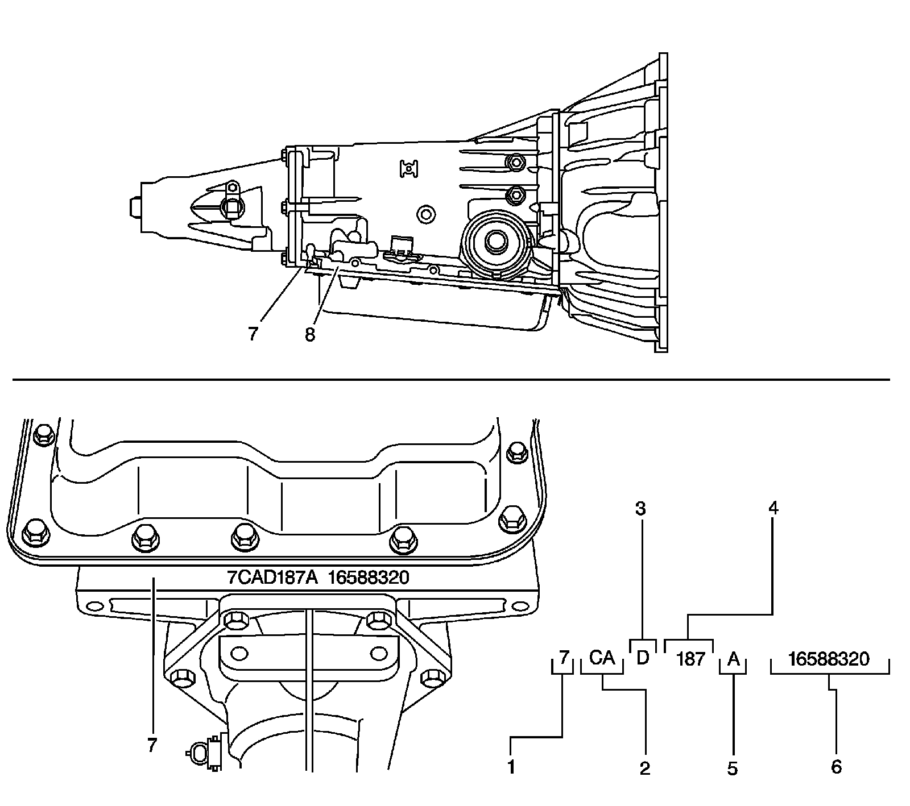
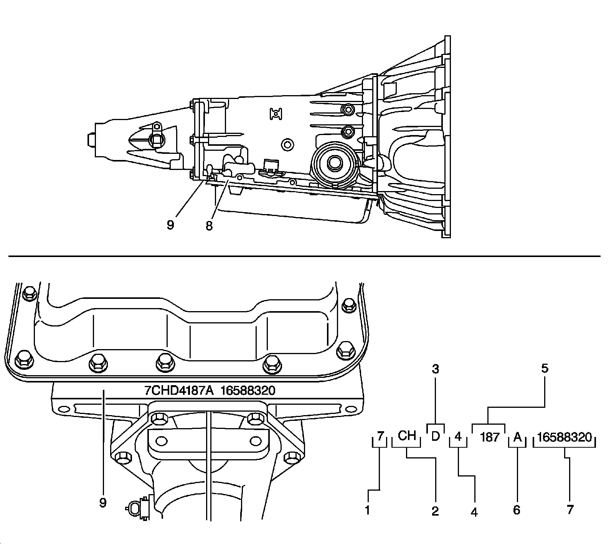
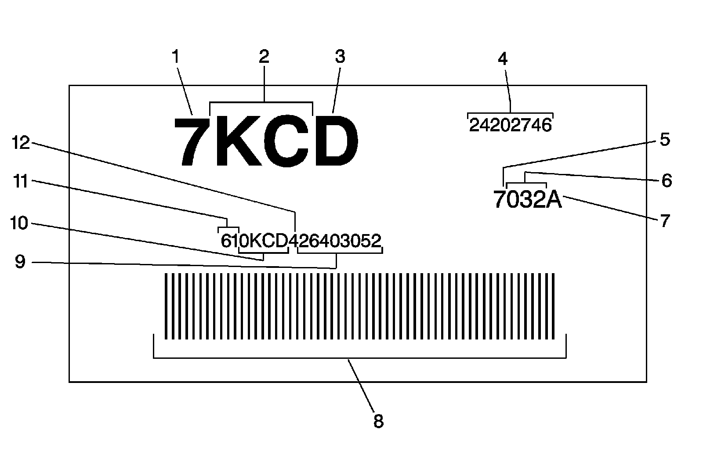
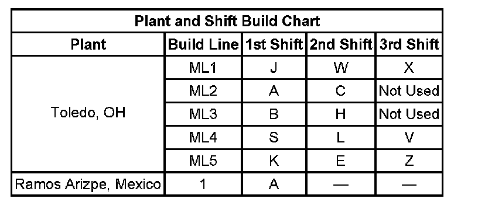

4L60-E/4L65-E/4L70-E Automatic Transmission
Transmission Identification Information
Toledo Build
Toledo Build:

1 - 7 = 2007
2 - Model
3 - Hydra-Matic 4L60-E
4 - Julian Date or Day of the Year
5 - Shift Built, See Shift Build Chart
6 - Serial Number
7 - Case/Pan Frame Rail Location
7 - Case/Pan Frame Rail Location
8 - Optional Transmission ID Location, Tag is Used as a Back-up if Unable to Etch Case/Pan Area and to Bar Code Scan
Ramos Arizpe, Mexico
Ramos Arizpe, Mexico:

1 - 7 = 2007
2 - Model
3 - Hydra-Matic 4L60-E
4 - Plant of Manufacture, 4 is Ramos
5 - Julian Date or Day of the Year
6 - Shift Built, See Shift Build Chart
7 - Transmission Serial Number
8 - Optional Transmission ID Tag Location, Tag is Used as a Back-up if Unable to Etch Case/Pan Area and to Bar Code Scan
9 - Case/Pan Frame Rail Area
9 - Case/Pan Frame Rail Area
Bar Code Label Contents
Bar Code Label Contents:

1 - 7 = 2007
2 - Model
3 - Hydra-Matic 4L60-E
4 - Transmission Asm. as Shipped Number
5 - 7 = Model Year
6 - Julian Date or Day of the Year
7 - Letter After Julian Date Identifies the Plant Shift Build, See Shift Build Chart
8 - Bar Code
9 - Serial Number
10 - Broadcast Code
11 - Transmission ID
12 - Build Location Y = Toledo, OH, 4 = Ramos Arizpe, Mexico
